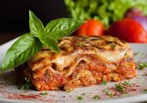

Lasagna Recipe

This lasagna recipe is a classic Italian dish that is sure to please. With layers of pasta, rich meat sauce, and creamy béchamel, it's a comforting meal for any occasion.
Ingredients:
- Lasagna Sheets: A package of no-boil or regular (pre-cooked) lasagna noodles.
- Sauce (Red): A large jar of your favorite marinara or pasta sauce.
- Veggies (Filling): Any mix of chopped vegetables like zucchini, mushrooms, spinach, onion, and bell peppers.
- Cheese (Creamy Layer): Ricotta cheese (or cottage cheese/Béchamel sauce for a non-ricotta version).
- Cheese (Topping): Shredded mozzarella cheese.
- Seasoning: Salt, pepper, dried oregano or basil (optional).
Steps:
- Preheat your oven to 375°F (190°C).
- In a large skillet, heat the marinara sauce over medium heat. Add the chopped vegetables and sauté until tender.
- In a separate bowl, mix the ricotta cheese with some salt, pepper, and herbs.
- To assemble, spread a layer of sauce on the bottom of a baking dish. Place a layer of lasagna sheets, followed by the ricotta mixture, sautéed veggies, and mozzarella cheese. Repeat the layers, finishing with mozzarella on top.
- Cover with foil and bake for 25 minutes. Remove the foil and bake for an additional 15 minutes, or until the cheese is bubbly and golden.
Home